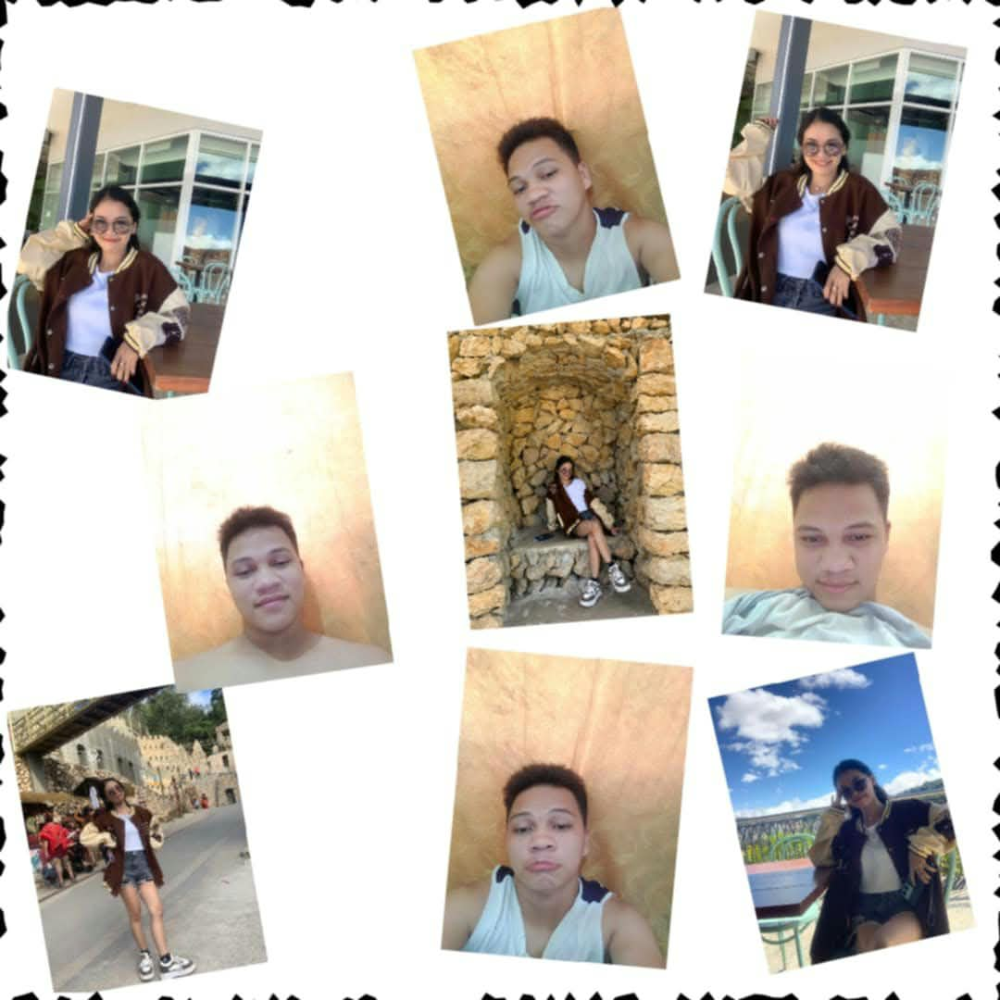
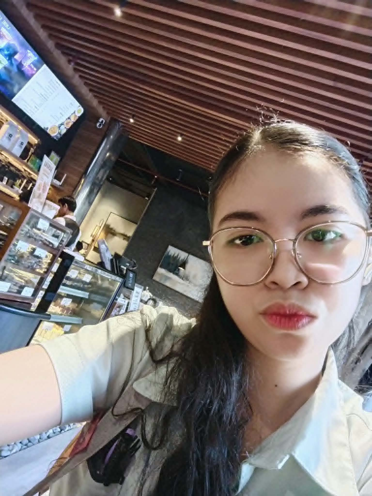
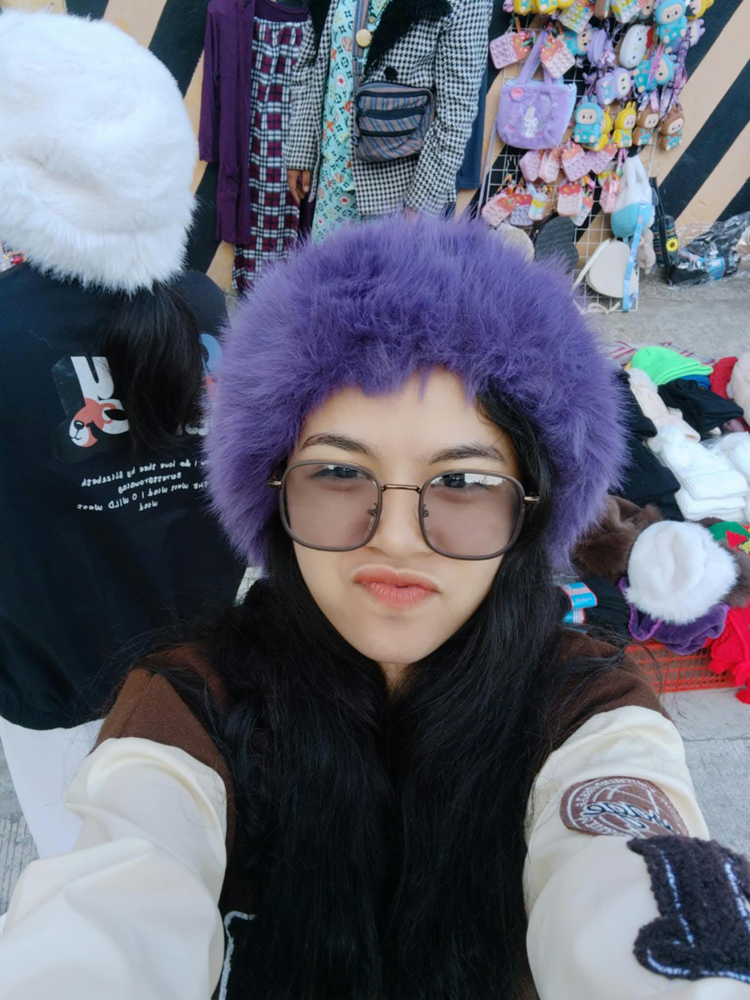

MAKE A WISH, MY LOVE
Happy Birthday! 🎂
Close your eyes, make a wish, and blow your candle, beautiful girl.
A LITTLE SURPRISE MADE JUST FOR YOU
Today is all about you, my luv MICHAILA NICOLE ROBLES 💜
I made something SIMPLE BUT special just for you. 💜
Made with all my luv 💌
MAKE A WISH, MY LOVE
Close your eyes, make a wish, and blow your candle, beautiful girl.
A GARDEN FULL OF LOVE
If I could give you every flower in the world, I would choose the prettiest ones for you. 💜
MY FAVORITE PERSON
Every picture tells a story, and every moment of you is worth celebrating. 📸

Our little collection of memories 📸💜

That beautiful face I never get tired of 🥹❤️

My pretty girl, always and forever 💜🌷
WORDS FROM MY HEART
Happy birthday, my love! 💜
Para sa pinakamamahal kong si Michaila Nicole Robles, ang aking luv. 💜🌷 Happy birthday, luv ko! ❤️🥹 Alam mo, luv, habang ginagawa ko itong munting surprise para sa'yo, paulit-ulit kong naiisip kung gaano ako kaswerte dahil dumating ka sa buhay ko. Sa dami ng taong puwede kong makilala sa mundo, ikaw ang naging espesyal sa akin. At sa loob ng **6 years and 8 months**, kahit magkalayo tayo at hindi pa tayo nagkikita nang personal, nandito pa rin tayo, patuloy na nagmamahalan at pinipiling manatili sa isa't isa. Minsan naiisip ko kung gaano kaya kasaya kapag dumating na ang araw na hindi na lang kita makikita sa screen ng cellphone ko. Yung araw na maririnig ko ang boses mo nang hindi na kailangang dumaan sa tawag, yung araw na makikita ko ang ngiti mo sa harap ko, at yung araw na sa wakas, hindi na lang kita mamimiss mula sa malayo. Gusto kong dumating ang panahon na hindi ko na kailangang sabihin sa'yo na miss na miss na kita, dahil kaya na kitang makita at makasama. Luv, hindi ko man alam kung kailan eksaktong darating ang araw na iyon, isa iyon sa mga bagay na hinihiling ko. Gusto kong maranasan natin ang mga simpleng bagay na matagal na nating pinapangarap ang magkasamang kumain, maglakad habang magkahawak-kamay, tumawa sa mga bagay na tayo lang ang nakakaintindi, at tumingin sa isa't isa nang hindi na kailangang sabihin ang salitang “miss kita.” Gusto kong maranasan kung paano ka ngumiti sa harap ko, kung paano kita yayakapin, at kung gaano kasarap sa pakiramdam na sa wakas, kasama na kita. Sa loob ng 6 years and 8 months, alam kong hindi laging madali ang ganitong relasyon. May mga araw na sobrang miss na kita, may mga pagkakataong gusto ko na lang na nandiyan ka sa tabi ko, at may mga sandaling sana puwede kitang yakapin kapag pagod ka o may problema ka. Ang hirap minsan na ang taong gusto mong alagaan ay malayo sa'yo. Gusto kong maging katabi mo kapag malungkot ka, gusto kong hawakan ang kamay mo kapag kinakabahan ka, at gusto kong yakapin ka kapag pakiramdam mo ay mabigat ang lahat. Pero kahit malayo tayo, luv, gusto kong malaman mong mahalaga ka sa akin. Hindi man kita mayakap sa tuwing kailangan mo, gusto kong maramdaman mong nandito ako para makinig, umintindi, sumuporta, at magmahal sa abot ng makakaya ko. Hindi man natin kayang kontrolin ang distansya, sana patuloy nating piliin ang isa't isa habang unti-unti nating inaabot ang araw na matagal na nating hinihintay. Ngayong birthday mo, ang wish ko para sa'yo ay maging masaya ka, maging healthy ka, matupad mo ang mga pangarap mo, at magkaroon ka ng maraming dahilan para ngumiti. Sana hindi mo makalimutang alagaan ang sarili mo. Sana sa mga araw na napapagod ka, maalala mong may isang taong sobrang proud sa'yo at masayang makita kang unti-unting naaabot ang mga pangarap mo. At higit sa lahat, sana dumating na rin ang araw na matagal na nating hinihintay—ang araw ng first meeting natin. Hindi ko alam kung ano ang una kong sasabihin kapag nakita na kita, luv. Baka kabahan ako, baka hindi ko maipaliwanag ang lahat ng nararamdaman ko, o baka ngingiti na lang ako habang iniisip na, “Sa wakas, nandito na siya.” Pero isang bagay ang sigurado ako: magiging espesyal sa akin ang araw na iyon dahil makikita ko na nang personal ang babaeng matagal ko nang minamahal. Sorry kung hindi ako palaging perpekto, luv. May mga pagkakataong nagkakamali ako, may mga bagay akong hindi agad naiintindihan, at may mga sandaling kulang ang mga salita ko para maipakita kung gaano kita kamahal. Pero gusto kong patuloy na matuto, umintindi, at maging mas mabuting partner para sa'yo. Ayokong puro salita lang ang pagmamahal ko; gusto kong ipakita rin ito sa paraan ng pakikitungo ko sa'yo, sa pagrespeto sa'yo, at sa pagsisikap na alagaan ang relasyon natin. Kaya sa birthday mo, luv, gusto kong sabihin na salamat sa pagiging bahagi ng buhay ko sa loob ng 6 years and 8 months. Salamat sa mga tawanan, sa mga alaala, sa mga kuwentuhan, sa mga pagkakataong pinili nating magpatuloy, at sa lahat ng maliliit na bagay na naging bahagi ng ating kuwento. Hindi ko alam kung gaano pa katagal ang paghihintay natin bago tayo tuluyang magkita, pero umaasa akong balang araw, maaalala natin ang panahong ito habang magkasama na tayo. Baka pagtawanan pa natin kung gaano tayo katagal naghintay para sa unang yakap na iyon. At kapag dumating ang araw na iyon, gusto kong yakapin ka nang mahigpit at iparamdam sa'yo kung gaano kita na-miss sa lahat ng panahong magkalayo tayo. Happy birthday, my luv, my beautiful girl.💜🌷 Sana magustuhan mo itong munting surprise na ginawa ko para sa'yo. Simple lang ito kumpara sa lahat ng gusto kong ibigay sa'yo, pero bawat bahagi nito ay ginawa ko nang buong puso. Dahil kung may isang bagay akong gustong iparamdam sa'yo ngayong birthday mo, iyon ay kung gaano ka kahalaga at kamahal sa akin. At kung tatanungin mo ako kung pipiliin pa rin ba kita kahit alam kong malayo tayo at kailangan nating maghintay para sa first meeting natin, ang sagot ko ay hindi ko kailangang pag-isipan nang matagal. Ikaw ang taong minahal ko, ikaw ang taong gusto kong makasama, at ikaw ang taong gusto kong makilala pa nang mas malalim habang patuloy tayong naglalakbay sa ating kuwento. I love you so much, luv.Hindi lang ngayong birthday mo, hindi lang kapag masaya tayo, at hindi lang kapag madali ang lahat. Gusto kong patuloy na ipakita sa'yo ang pagmamahal ko sa ordinaryong mga araw, sa mga araw na nami-miss natin ang isa't isa, at sa mga araw na kailangan nating maging mas matiyaga at maunawain. Happy birthday ulit, luv ko. Sana balang araw, ang susunod kong birthday message para sa'yo ay mabasa mo habang katabi na kita, hawak ang kamay mo, at wala nang distansyang naghihiwalay sa atin. 6 years and 8 months na tayo, luv, at isa pa rin sa mga pinakahihintay ko ay ang unang pagkakataong masabi sa'yo nang harapan: lagi mo pong tandaan na mahal na mahal po kita palagi at sobraaaaaaaa 💜🌷 thank you din po sa lahat ng bagay na natulong mo sakin ng sobraaa anlaki andami monang natulong sakin kaya thank you po ikaw lang ung takbuhan ko sa lahat mahal na mahal kita sobraa luvluv “Happy birthday, mahal ko. Nandito lng ako palagi para sayo.”🥹❤️ I love you, luv. Hanggang sa araw na magtagpo na ang ating mga kamay, patuloy kitang mamahalin mula rito. Ikaw pa rin, palagi. 💌💜*
With all my love,
Your Person 💜
MY FAVORITE PERSON, ALWAYS
Out of all the people in this world,
you will always be someone special to me.
Happy birthday, my love. 💜
You are loved more than you know. ✨